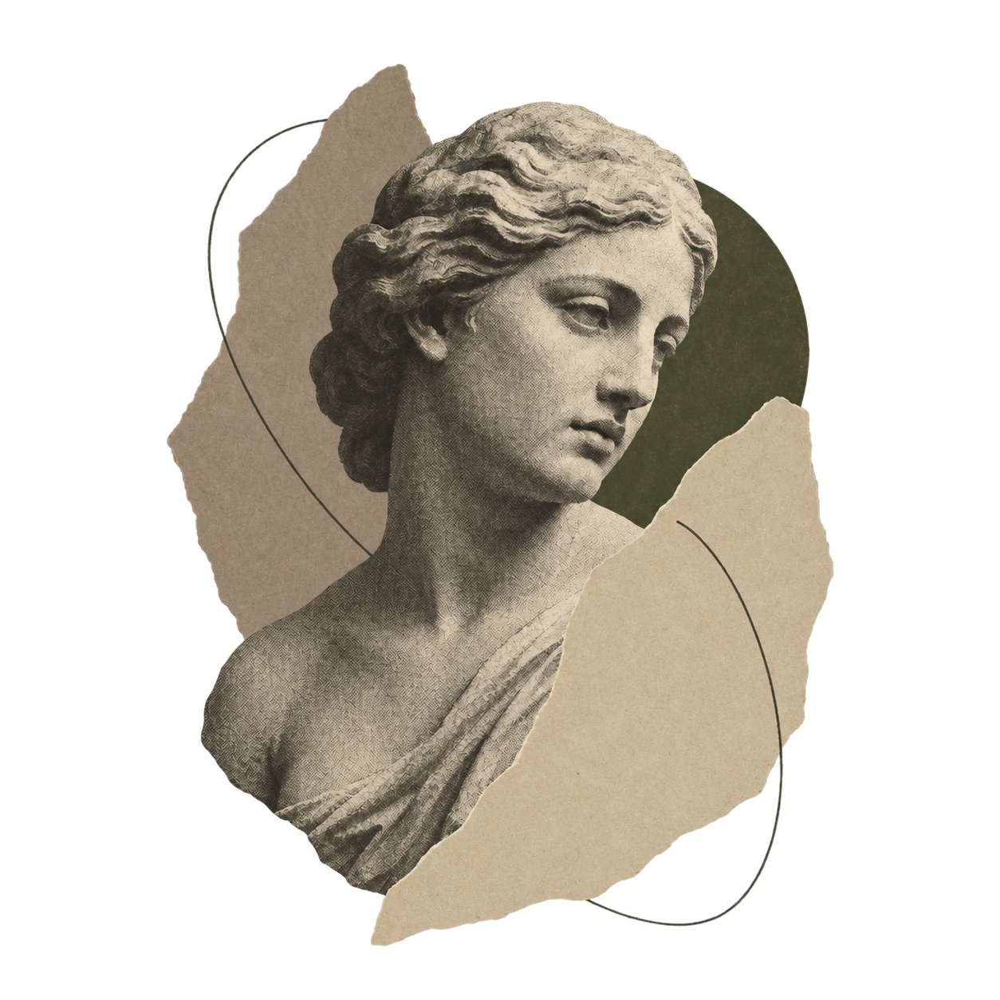
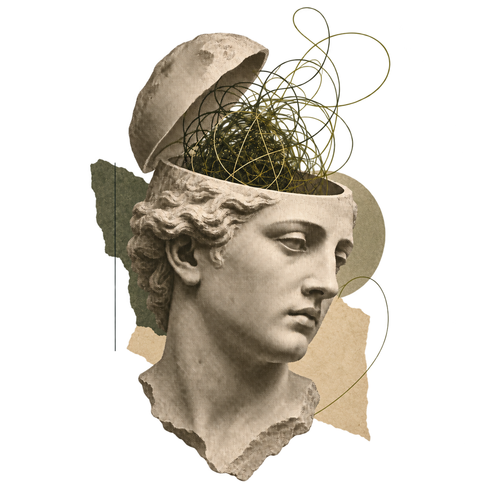
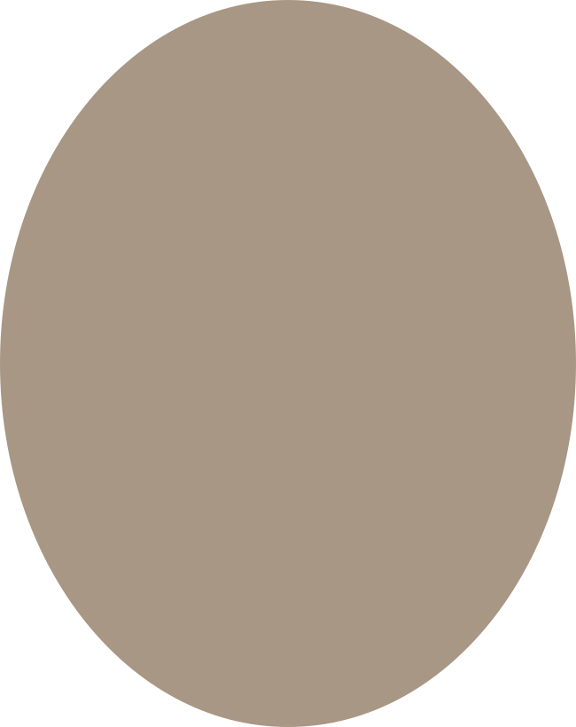

Тревога и страхи
- Панические атаки
- Тревожность
- Страхи и фобии
- Сверхнастороженность
- Навязчивые мысли

Вы можете обратиться ко мне, если сталкиваетесь с тревогой, сложными переживаниями, трудностями в отношениях или другими состояниями, которые влияют на вашу жизнь.
Понимать себя • слышать свои чувства • находить опору в себе





Клинический психолог
Я Юлия Бердникова, клинический психолог.
В своей работе я уделяю внимание тому, как человек переживает сложные события, строит отношения с окружающими и самим собой.
Ко мне обращаются с тревогой, страхами, внутренними конфликтами, сложностями в отношениях и переживаниями, которые влияют на повседневную жизнь.
Для меня важно создать пространство, в котором можно открыто говорить о своих чувствах и постепенно разбираться в происходящем.
Моё образование и опытВы можете обратиться ко мне с личным запросом, если тревога, сложные эмоции, отношения или жизненные изменения влияют на вашу повседневную жизнь.
Личный запрос
На индивидуальной консультации мы можем обсудить то, что вас беспокоит: тревогу, отношения, сложные эмоции, жизненные изменения и внутренние конфликты.
Формат приёма — уточняется при записиЗаписаться на консультацию
Психологическая работа
Мне важно, чтобы работа была понятной, бережной и связанной с вашим запросом. Конкретные методы и подходы мы обсуждаем на встрече.
Сначала определяем, что сейчас особенно важно и на чём стоит сосредоточиться.
Исследуем переживания, реакции и ситуации, которые влияют на повседневную жизнь.
Ищем способы лучше понимать себя и справляться с происходящим в подходящем темпе.
Работа строится последовательно: от знакомства и прояснения запроса — к совместной работе и подведению итогов.
Обсуждаем, что привело вас на консультацию.
Определяем важные темы и комфортный темп.
Возвращаемся к важным темам и отслеживаем изменения.
Обсуждаем результаты и возможные дальнейшие шаги.

Образование и практика
Профессиональное образование и дополнительная подготовка помогают мне выбирать подходы к работе с разными запросами.
16 лет профессионального стажа
Клинический психолог
Диплом
НОУ ВПО «Институт профессиональных инноваций» · 2010
Опыт клиентов
Здесь можно познакомиться с отзывами людей, которые обращались ко мне за психологической помощью.
Мне важно, чтобы во время консультации вы могли сосредоточиться на себе и нашем разговоре. Здесь вы можете заранее посмотреть пространство, в котором проходят встречи.
6 фотографий · нажмите на изображение, чтобы открыть галерею
Здесь я собрала ответы на вопросы, которые могут возникнуть перед нашей первой встречей.
Вы можете обратиться ко мне, если переживания, тревога, конфликты или другие трудности влияют на вашу повседневную жизнь. Необязательно ждать, пока ситуация станет критической.
Мы знакомимся, обсуждаем вашу ситуацию и вместе уточняем запрос и комфортный формат дальнейшей работы.
Количество встреч зависит от запроса и динамики работы. Мы можем обсуждать это по ходу консультаций.
Да. На первой встрече мы можем вместе разобраться, что сейчас беспокоит вас больше всего.
Содержание консультаций конфиденциально в пределах профессиональных и законодательных требований.
Нажмите «Записаться» — откроется онлайн-запись. Выберите услугу, удобную дату и свободное время в календаре, затем оставьте контактные данные. Порядок подтверждения записи, переноса и отмены встречи мы согласуем до первой консультации.
Если вы хотите обсудить свою ситуацию или уточнить возможность консультации, оставьте заявку. Мы согласуем удобное время для встречи.
Оставить заявку